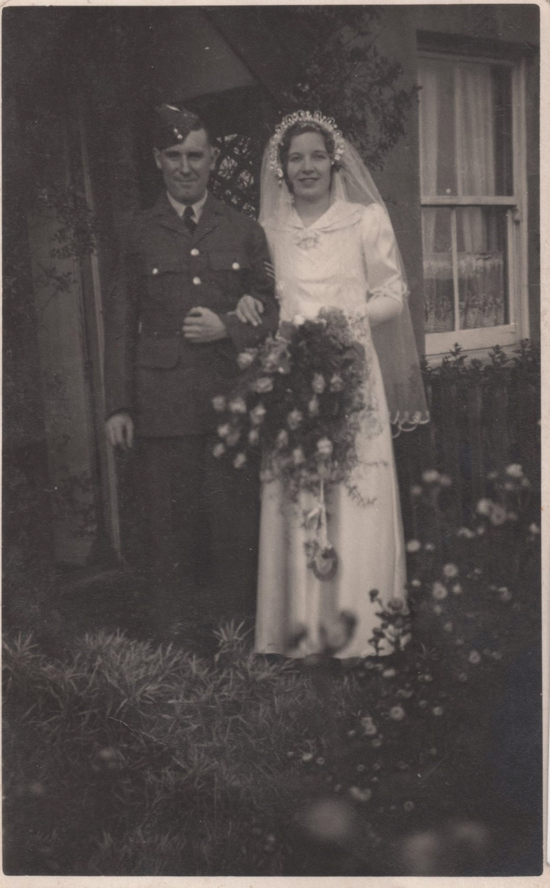
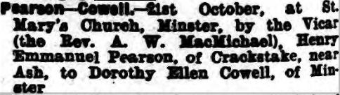
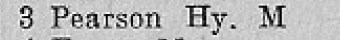
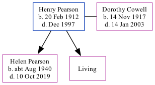

Henry Manuel Pearson 1912 - 1997 [ Home ] | [ Calendar ] | [ Surnames Index ] | [ Family History ]Henry Pearson , the husband of Dorothy Helen Cowell (the aunt of Nigel Horne ), was born in York, North Yorkshire, England on Feb 20, 19121,2,3 and married Dorothy (with whom he had 2 children: Helen Anne and Jill , along with 1 surviving child) at St Mary's Church, Minster, Thanet, Kent, England on Oct 21, 19394 . In 1965, he lived on 3 Laundry Road, Minster in Thanet5 .
He died in Dec 1997 in Thanet2 (age: 85).
Children Helen Anne was born c. Aug 1940Citations England & Wales deaths 1837-2007 - Findmypast England & Wales, Death Index: 1984-2005 Online publication - Provo, UT, USA: The Generations Network, Inc., 2007.Original data - General Register Office. England and Wales Civil Registration Indexes. London, England: General Register Office. © Crown copyright. Published by permission of the Cont England & Wales, FreeBMD Birth Index, 1837-1915 Online publication - Provo, UT, USA: The Generations Network, Inc., 2006.Original data - General Register Office. England and Wales Civil Registration Indexes. London, England: General Register Office. © Crown copyright. Published by permission of the Cont England & Wales, Marriage Index: 1916-2005 Online publication - Provo, UT, USA: The Generations Network, Inc., 2009.Original data - General Register Office. England and Wales Civil Registration Indexes. London, England: General Register Office. © Crown copyright. Published by permission of the Cont 1965 Kelly's Thanet Directory Media Dorothy Cowell - Henry Pearson - marriage  Thanet Advertiser 27 Oct 1939  1965 Kelly's Thanet Directory  England & Wales marriages 1837-2008 - BMD/M/1939/4/AO/000391/014 England & Wales marriages 1837-2008 - BMD/M/1939/4/PZ/000037/100 England & Wales deaths 1837-2007 - BMD/D/1997/12/82135368 England & Wales births 1837-2006 - BMD/B/1912/1/AZ/001053/016 Family Tree Interactive Map
Map
Generated by ged2site . Last updated on Feb 18, 2025